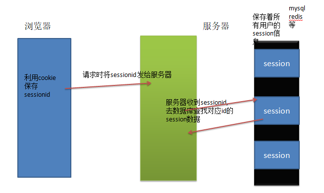
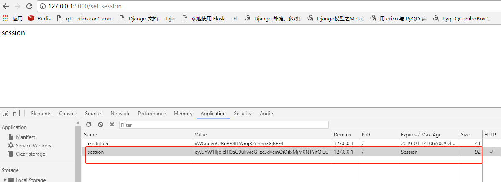

session
在学习django中的所有的session是保存在服务器中的数据库的。将sessionid写到浏览器，浏览器发送请求的时候将sessionid传回给服务器，然后再利用sessionid到数据库中匹配对应用户的session信息。django中创建好项目就有默认的数据库，这个保存在数据库中好理解。

但是在Flask中，我们并没有数据库配置，那么session信息保存在哪个位置呢。实际上Flask的session是基于cookie加secret_key 进行加密后保存在cookie中的。
session具体的使用方法：
首先设置SECRET_KEY:
# Flask中需要使用session必须先配置SECRET_KEY
app.config['SECRET_KEY'] = os.urandom(24)
或者 自己输入一个字符串
app.config['SECRET_KEY'] = 'sdfsdfs&&^%dsdf*/*$#'
----------
import os
os.urandom(n)
返回n个字节的加密的随机字符串
视图函数中使用session跟python字典类似使用key获取值，或者使用get方法。
案例：
# coding=utf-8
# 导入Flask类
from flask import Flask, session
import datetime
# Flask 接收一个参数__name__,
# 导入模块的目录， flask以这个目录为基础，寻找静态文件目录static和模板目录templates
app = Flask(__name__)
app.config['SECRET_KEY'] = 'qweqwr^%%&123?><\][ddd'
@app.route('/set_session')
def set_session():
# 设置session 字典形式
session['name'] = 'python'
session['password'] = '123456'
return 'session'
@app.route('/get_session')
def get_session():
# 获取session 采用[key]方式取值，如果key不存在会报错。
name = session['name']
print(name)
# 获取session 采用get方式取值，如果key不存在返回None,
pwd = session.get('haha')
print(pwd)
return 'name:%s ' % name
def
if __name__ == '__main__':
# Flask 应用程序实例的方法run启动web服务器
app.run(debug=True)
设置session之后在浏览器查看cookie信息，可以看到多了个session信息。

删除session
可以直接使用session.pop('key',None)：
session.pop('name',None)
如果要删除session中所有数据使用：clear()：
session.clear()
@app.route('/del_session')
def del_session():
# 删除session的某个键值对,返回删除的session值on，如果不存在可以设置一个默认值。
result = session.pop('name', None)
# 清除整个session.
session.clear()
return '删除session %s ' % result
设置session超时时间
Flask的默认session利用了Werkzeug的SecureCookie，把信息做序列化(pickle)后编码(base64)，放到cookie里了。
过期时间是通过cookie的过期时间实现的。
为了防止cookie内容被篡改，session会自动打上一个叫session的hash串，这个串是经过session内容、SECRET_KEY计算出来的，看得出，这种设计虽然不能保证session里的内容不泄露，但至少防止了不被篡改。
过期时间是这样来设置:
from datetime import timedelta
session.permanent = True
app.permanent_session_lifetime = timedelta(minutes=5)
session['key'] = value